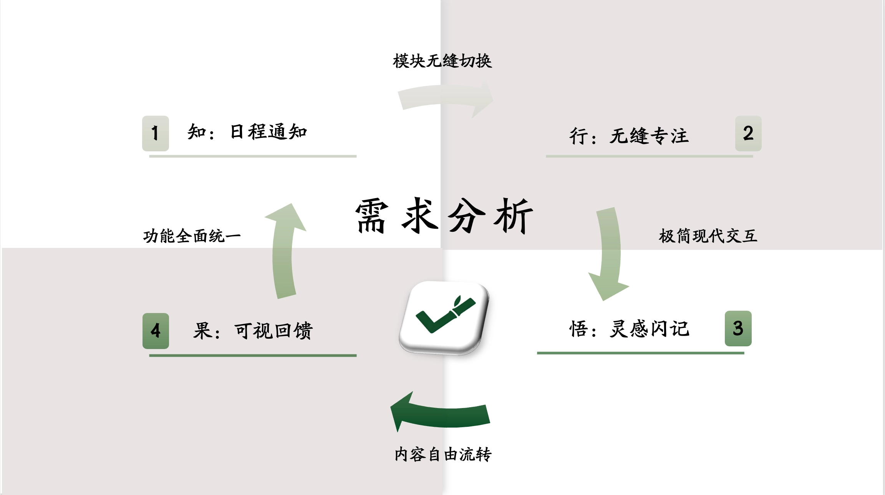
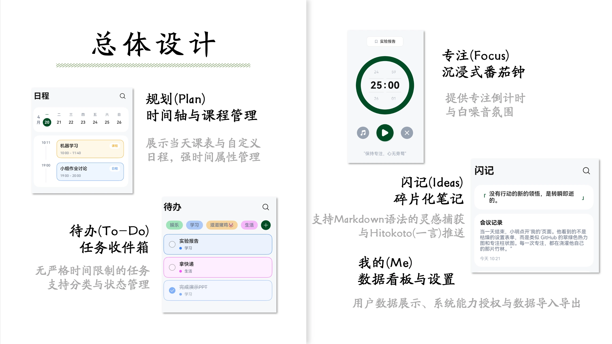
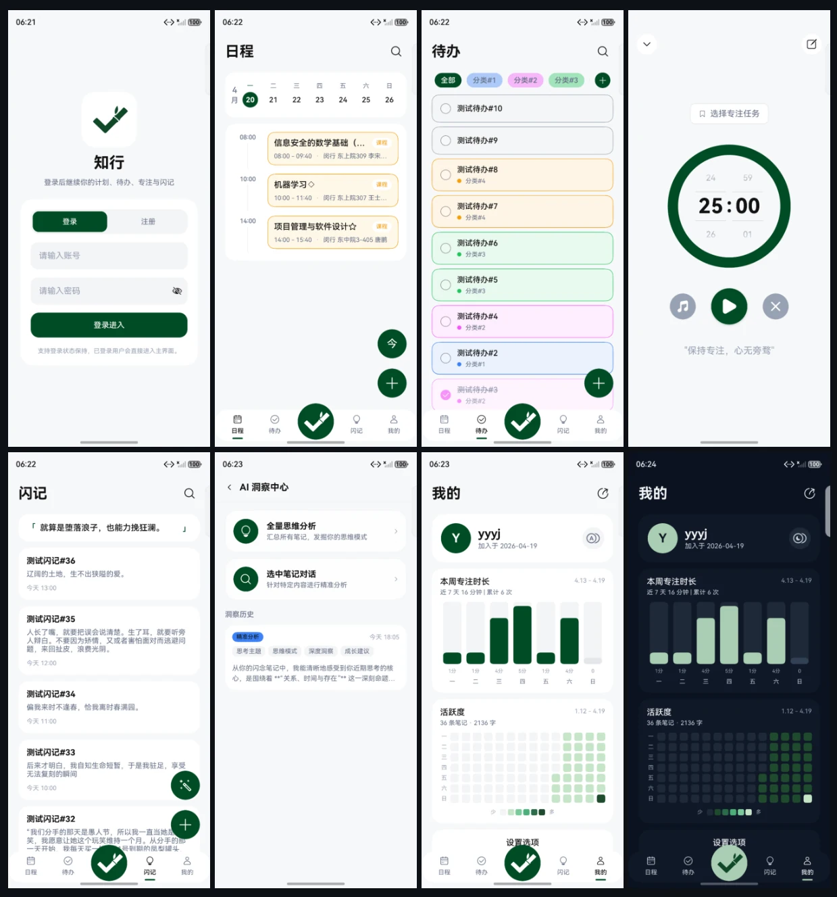
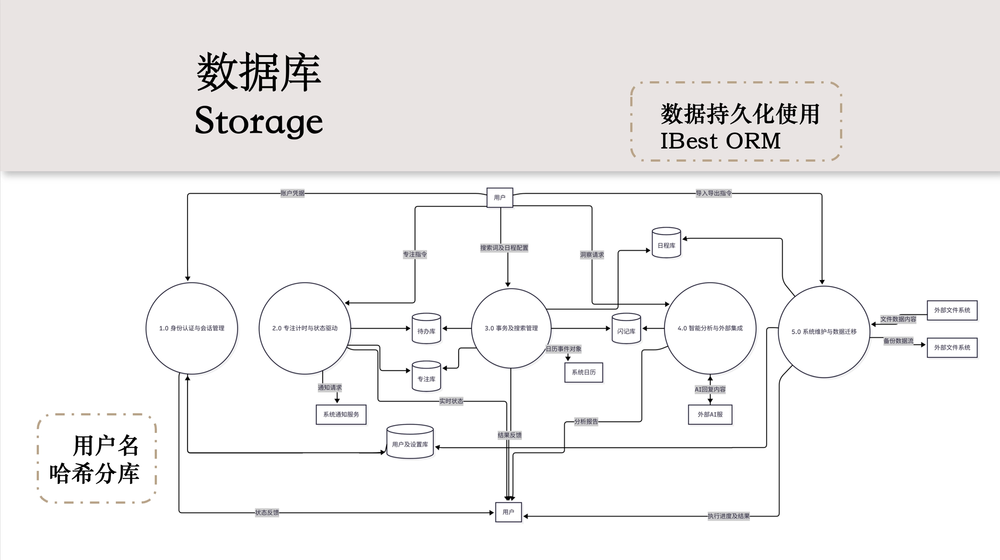
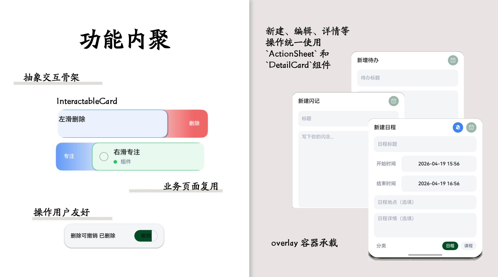

鸿蒙应用知行ActHub开发分享
鸿蒙应用开发实践：深度解析「知行 ActHub」的功能与交互美学
最近两周，我和小组成员们经历了一场高强度且充满成就感的极限开发——作为 NIS3366《项目管理与软件设计》的课程项目，我们基于 HarmonyOS NEXT 纯血鸿蒙生态，从零到一打造了一款全新的日程管理与效率应用：知行 ActHub。作为一款追求极致体验的独立开发项目，我们的核心愿景是打破效率软件的“孤岛效应”，打造一个真正的统一工作流。
因此，在课程结束、工作落下帷幕之际，我想和大家分享一下我们在这个项目中探索的五大核心功能，以及我们在 ArkUI 的加持下，做了哪些交互上的巧思与打磨。
设计哲学：打造个人生产力闭环
事实上，本课程项目的选题原本是开发一个商城平台或新闻应用，但想着既然要开发，不如做一个更实用、能落地的工具类应用，于是我们就选定了效率工具这个赛道。于是在项目开始前，我便展开了头脑风暴，对市面上主流的效率工具进行了深入的分析和总结，最终提炼出了我们想要解决的核心痛点：效率工具的碎片化。
以我自身使用的软件为例：在日程管理方面，我习惯使用系统自带的日历——Vivo 的原生日历体验非常流畅，还可以语音添加日程；Mac 的原生日历可以在桌面组件及 NotchNook 等插件里展示日程；学校的交我办中的日程则能够自动同步课程表。在待办方面，我多端使用的均是 Microsoft To Do，青睐的是他多平台的无缝同步体验（当然嘀嗒清单也是不错的选择）。在专注方面，我曾使用过 Forest 这款应用，对其以种树来可视化专注时间的设计印象深刻。而在灵感记录方面，我使用的是 flomo 浮墨笔记，非常喜欢它的轻量和碎片化记录方式。
由此可见，我的工作流是割裂的，也时常会面临在多个应用间来回切换的体验。因此我们想：能不能将这些实用的、有助于提高个人生产力的功能集成在一个应用中，不必实现原软件一摸一样的功能，而是确保用户在一个统一的空间内就能完成从计划、执行到复盘的完整流程？这就是「知行 ActHub」的设计哲学：打造一个个人生产力的闭环，让任务与想法在同一空间内自由流转。 我们将应用划分为五大核心场景：「日程 Plan、待办 Todo、专注 Focus、闪记 Idea、我的 User」，每个场景都针对用户在不同阶段的需求进行深度打磨，力求在功能与体验上都能满足用户的期待。


核心场景：从计划到复盘的全流程覆盖

日程 (Plan)：全局掌控时间
在我们的设想里，日程页面是用户一天的数字看板。在这里，用户一天的日程与课程都以清晰的时间轴形态呈现。为了不必适配各学校教务系统的接口，我们选择了导入 ICS 文件的方式来获取课程表数据。此外，我们在底层集成了系统 Calendar（日历）能力和 Notification（通知）服务。这意味着你在应用内创建的重要日程，不仅能得到准时的系统级本地提醒，还能与系统原生体验无缝接轨。
待办 (Todo)：行云流水的任务流转
相比于日程页面的强时间属性，待办页面的时间属性则弱得多，这也与其强时效性和灵活性相匹配。待办列表绝不仅仅是打个勾那么简单，更要考虑交互的舒适度与便捷性。通过页面最上方的分类筛选栏，用户可以快速切换不同类型的待办任务（如工作、学习、生活等）。而在待办列表中，交互性更是做到了极致：你不仅可以以符合直觉左划操作删除、点击打开详情卡片进行编辑，还可以通过右划一键将其送入专注页面，开启专属的计时流。这种跨页面的联动，正是“统一工作流”的最佳体现。
专注 (Focus)：沉浸式的深度工作
对于专注页面，我们将其定位为沉浸式的深度工作的核心场景：当你需要摒弃杂念时，专注页面提供了沉浸式的番茄钟与白噪音功能。更重要的是，我们在这个模块中调用了鸿蒙 NEXT 非常亮眼的LiveView（实况窗）能力。当你切出应用回复微信或浏览网页时，当前的专注状态、剩余时间会以“胶囊”或“卡片”的形式悬浮在系统状态栏。无需频繁切回应用，时间流逝尽在掌握，将“原生感”拉满。值得提醒的是，一旦离开专注页面一分钟，番茄钟的倒计时会自动暂停，并通过系统通知能力提醒你回到专注状态——这种防走神的设计也是我们在细节上的用心。
闪记 (Idea)：抓住转瞬即逝的灵感
与前几个页面不同，闪记页面强调的是快速捕捉和碎片化记录。这与日程管理以及专注并不冲突，而是在效率工具中一个非常重要的补充。人的灵感往往是碎片的，而主打轻量、快速记录的闪记页面正好满足了这一需求。为了让碎片化记录更有成就感，我们还开发了类似 GitHub 贡献图的闪记热力图功能，直观记录你的每一份思考。为了适应 AI 时代的需求，我们还在这里引入了 AI 洞察功能：可以对闪记内容进行智能分析，或是对你最近的杂乱灵感进行总结归纳，或是对选中笔记进行针对性探讨，帮你把一个模糊的念头扩展成可执行的方案。
我的 (User)：数据洞察与自我复盘
在个人中心页面，除了基础的账户管理，我们还实现了数据看板以及导入导出功能。用户可以清晰地看到自己在每周的专注时长，也能看到闪记数据，帮助他们更好地了解自己的效率习惯。同时，我们也提供了数据导入导出功能，方便用户备份或在不同设备或平台间迁移数据，确保他们的生产力资产不会被锁定在某个应用中。值得一说的是，我们采用基于用户维度分库的
ORM + Repository 模式，提供清晰的数据访问层次与用户数据隔离。且除了 AI
请求，所有业务数据遵循本地优先存储。借助
@ibestservices/ibest-orm
实现用户维度的数据分库隔离，并用系统级的
CryptoArchitectureKit 为敏感信息加密护航。

交互美学：基于 ArkUI 的原生体验探索
在两周的极限开发里，我们不仅追求能用，更追求好用。基于 ArkUI 声明式的强大特性，我们在应用中埋入了许多提升幸福感的交互细节：
一致的视觉体验：深浅色主题全覆盖
我们深知，效率工具的使用场景是多样的，用户可能在清晨的第一缕阳光下规划一天，也可能在深夜的静谧中复盘总结。因此，应用全量支持系统的深浅色主题切换，也提供了跟随系统设置的选项。当你在深夜复盘时，深邃的暗黑模式能带来极其舒适的视觉包裹感；而在白天，明亮的浅色主题则能让你精神焕发地规划未来。无论何时何地，知行 ActHub 都能以最适合的视觉氛围陪伴你的效率之旅。
手指的舞蹈：左右划动与快捷操作
在日程、待办、闪记以及 AI 洞察的列表中，如果每次操作都要点进详情页，效率无疑是低下的。因此，我们全面引入了丰富的手势划动交互。用户只需在列表项上左右划动或点击，即可完成完成、归档、删除、专注等操作，整个过程丝滑流畅，符合移动端最自然的肌肉记忆。
克制的防错机制：带撤销的删除反馈
效率软件中最怕的就是误删。为了平衡操作效率与数据安全，我们放弃了繁琐的确认删除二次弹窗，转而采用了带撤销机制的删除反馈。当你删除一条记录时，列表项会伴随顺滑的动画消失，并在底部短暂弹出一个轻量级的提示框。如果你是误触，只需在这几秒内点击撤销，软删除的数据瞬间恢复，以丝滑的动画回归原位，极大降低了操作的心理负担。
优雅的空间利用：Overlay 弹层导航
对于添加任务、快速记事等高频动作，我们没有使用生硬的页面跳转，而是广泛采用了Overlay 弹层导航和可交互卡片设计。无论是新建或是编辑，我们都让输入表单以卡片的形式从底部或中央优雅地弹出，并为页面平滑添加一层半透明遮罩。这种设计不仅保持了用户的视觉连续性，也让整个应用的空间感更加立体，提升了交互的沉浸感。

结语与展望
在这个由 6
人组成小队中，我主要负责了前期的产品需求分析与总体设计。在完成竞品调研后，我绘制了应用的原型，并操刀了整体的
UI
设计与规范调整。在实际编码中，我主要负责了基础通用组件的封装和核心的待办页面开发，同时作为项目管理的齿轮，兼顾了代码的分支管理与合并工作。这两周的节奏虽然紧凑，但也让我深刻体会到了
HarmonyOS NEXT 的潜力（换言之，仍需发展，毕竟ArkTS
作为一门新生语言，AI 对他的知识储备依旧有限）。
虽然因为课程结课时间有限，我们目前发布的 v1.0.0 还算是一个最小可行性产品，但「知行 ActHub」的故事并没有结束。在未来的规划中，我们希望进一步完善它，如：
- 功能完善：在现有功能的基础上，继续迭代优化用户体验，并增加更多实用的功能模块，如日程的周期性任务、待办的优先级与截止日期设置、闪记的多媒体与 Markdown 渲染支持、AI 洞察的 API 自主配置、用户头像自定义、账户名称及密码修改等。
- 性能优化：持续优化应用性能，增加懒加载机制，提升启动速度与响应效率，改善用户体验。
- 桌面组件：利用鸿蒙桌面组件能力，在桌面直接展示日程安排与待办状态，提升触达率。
- 多端流转适配：依托鸿蒙强大的分布式能力，实现在平板、智慧屏等大屏设备上的增强视图与数据同步。
- 更深度的本地提醒：集成系统后台通知，不再依赖日历中转，提供更原生的定时提醒功能。
- 进阶的智能化：基于日常和待办数据，提供智能任务推荐与精力分析
如果你对鸿蒙开发感兴趣，或者单纯想体验一下我们打磨的这些交互细节，欢迎去我们的 GitHub 仓库逛逛。如果觉得这个项目对你有启发，或者喜欢我们的 UI 设计，别忘了在 GitHub 上点个 Star 哦！也非常欢迎在评论区或通过 Issue 与我们交流探讨。